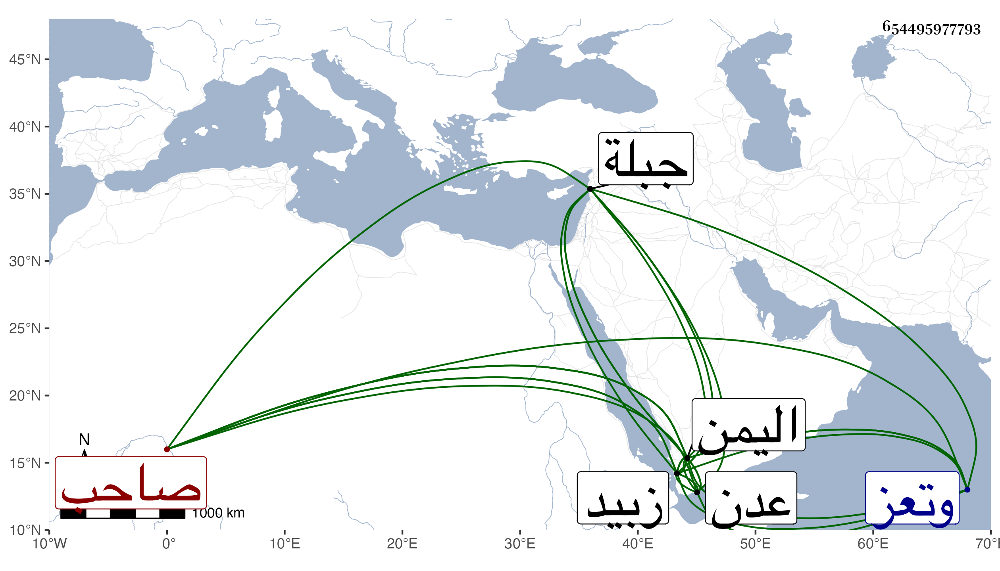

0902Sakhawi.DawLamic.ITO20230111-ara1.EIS1600.654495977793
Biography ID: 654495977793
أحمد بن إسماعيل بن عباس بن علي بن داود بن يوسف بن عمر بن علي بن محمد ابن رسول الناصر بن الأشرف بن الأفضل بن المجاهد بن المؤيد بن المظفر بن المنصور ملوك اليمن صاحب زبيد وعدن وتعز وجبلة وغير من بلاد اليمن . ملك بعد أبيه في ربيع الأول سنة ثلاث وثمانمائة فلم تحمد سيرته وجرت له كائنات وكان فاجرا جائرا من شرار بني رسول وفي أيامه خرب غالب بلاد اليمن لكثرة ظلمه وعسفه وعدم سياسته وتدبيره ولم يزل على ذلك حتى سقطت صاعقة على حصنه المسمى قوارير من زجاج خارج مدينة زبيد فارتاع من صوتها وتمرض أياما ثم مات في سادس عشر جمادى الآخرة سنة سبع وعشرين قال الله تعالى ويرسل الصواعق فيصيب بها من يشاء وحمل لتعز فدفن بمدرسة أبيه بها إذ لم يبن له مدرسة . ووصفه العفيف الناشري بأنه كان موصوفا عند العام والخاص بوفور الحلم التام بحيث أنه ترفع إليه الأمور العظام التي لا تحتمل فلا يغضب لها وهذا يؤيد ما تقدم . وملك بعده ابنه المنصور عبد الله الآتي إن شاء الله هو وولد هذا إسماعيل وجده . وذكره المقريزي في عقوده مطولا .
